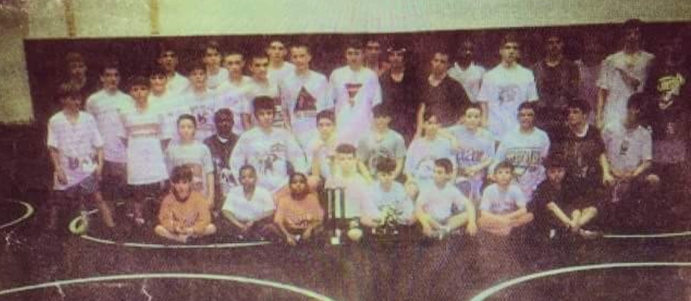
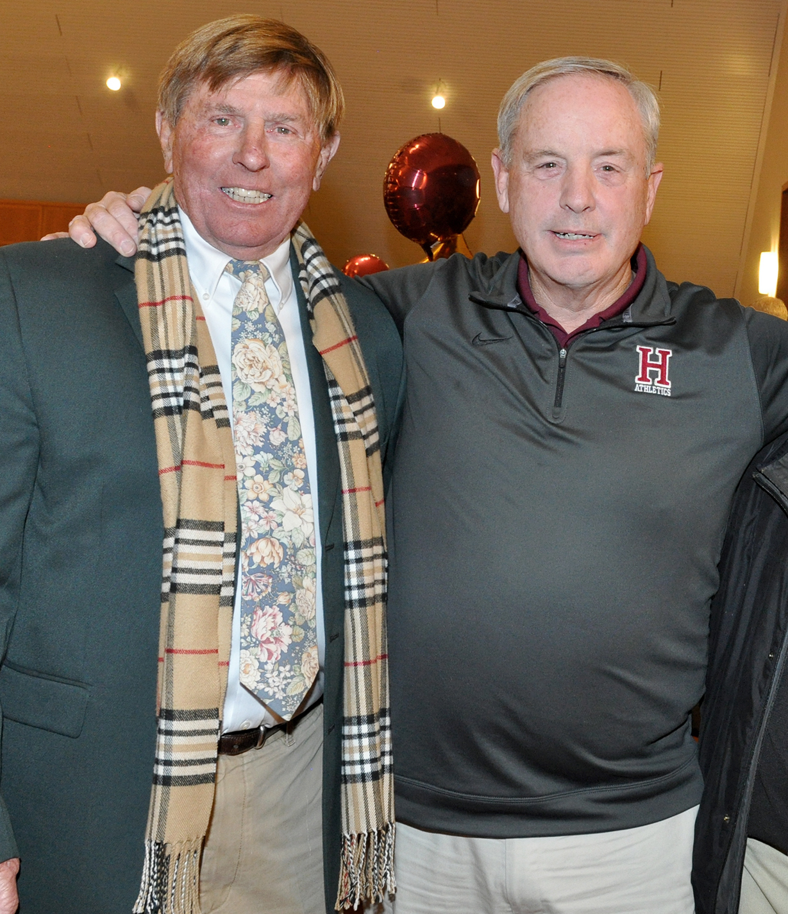

<div class="container">
    <div class="row">
        <div class="col-md-6 text-center">
            
            <br><br>
            
        </div>
        <div class="col-md-6">
            <h3 class="header-light regular-pad">About Team Renegade</h3>
            <p class= "lead">Team Renegade is an elite wrestling club in Southeast Pennsylvania directed by David Hoffman
            and Zach Doll.  The pair connected at The Hill School in 1996 and wrestled together for 4 years until Doll
            graduated in 2000 and began a successful wrestling career at the University of Pittsburgh.  Hoffman, who graduated a year
            later, headed south to Blacksburg, Virginia where he was an NCAA All-American for the Hokies in 2006.

            <br><br>

            Upon graduating from Virginia Tech, Hoffman embarked on a 12-year college coaching career with stops at Bucknell,
            Virginia Tech, and Chattanooga.  In total, Hoffman has coached 21 NCAA All-Americans, including 2014 NCAA Finalist,
            Devin Carter.  In the four years that Hoffman was coaching at VT, the teams finished 10th, 8th, 10th, and 4th
            (first time an ACC program earned a D1 team trophy).

            <br><br>

            Doll grew up wrestling for Talon Wrestling Club, a longtime rival of Team Renegade.  Upon graduating from the
            University of Pittsburgh, Doll immersed himself in the strength and fitness world, training some of the best
            athletes in the country, including multiple professional athletes.  He is now a Certified Personal Trainer and Owner of his own successful
            strength and fitness company that focuses on strength and performance.

            <br><br>

            Re-establishing Team Renegade has been something that Hoffman has always talked about doing from the moment he
            began his coaching career.  Now reunited with longtime friend and teammate, Zach Doll, the two look to return
            Team Renegade to the premier club that it was in the 90's.</p>
        </div>
    </div>
</div>

